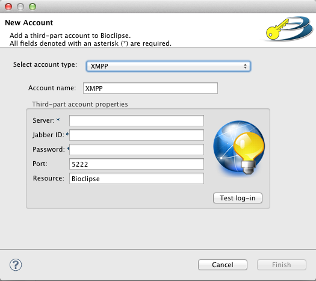

To be able to login the an XMPP-service you need to add the information to your user account in Bioclipse. If you have not created an user account, yet then follow the instructions in the section "Creating a new user account" of Bioclipse user manual.
The information needed by the XMPP-service (as for all web-services that you might use in Bioclipse) is stored in a sub-account to your user account. To create this sub-account, choose File > New... > General > Account and press next. If you have not logged in to your Bioclipse user account, you will be asked to do so. Write your user name and password, and then press next again. Now the wizard should look simular to the image below, choose XMPP in the drop-down menu at the top of the wizard. Then you may choose a different name than the default for the this account, this is made in the textbox that has the label "Account name" in front if it. Below those there is a group called "Third-part account properties". Here's where you fill in the settings for an existing Jabber server, your Jabber ID (JID) and password, or use these values:

Server: ws1.bmc.uu.se
Jabber ID: test@ws1.bmc.uu.se
Password: test
When you done this press Finish.